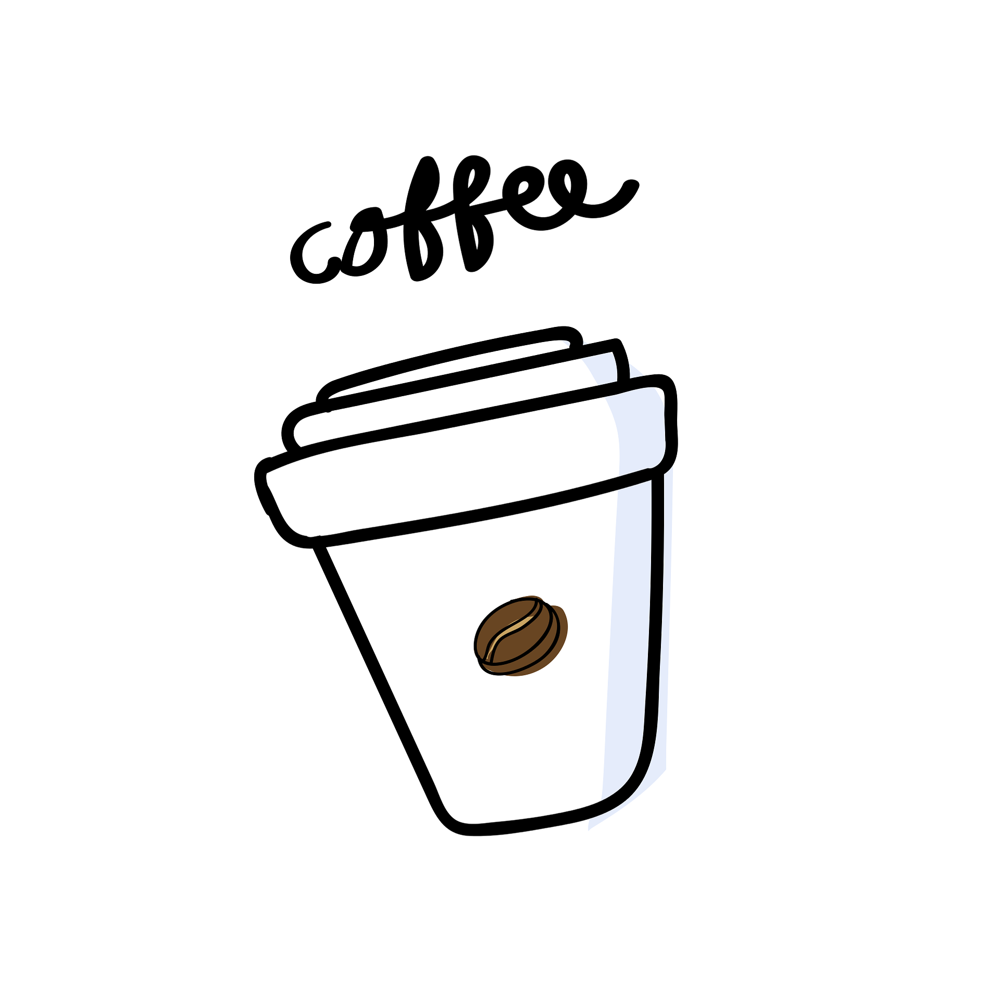

ABOUT US
The coffee place is a place where you get to enjoy the best coffee. The serenity of our stores allows you to havethe best time possible in your daily activities
Our barrister are highly trained for make the best coffee for your satisafaction

 Variations of the drink involve the use of cream instead of milk, and flavoring with cinnamon or chocolate powder.[2][3] It is typically smaller in volume than a caffè latte, with a thicker layer of microfoam.[4]
The name comes from the Capuchin friars, referring to the colour of their habits,[5] and in this context referring to the colour of the beverage when milk is added in small portion to dark, brewed coffee[6] (today mostly espresso). The physical appearance of a modern cappuccino with espresso créma and steamed milk is a result of a long evolution of the drink.
Variations of the drink involve the use of cream instead of milk, and flavoring with cinnamon or chocolate powder.[2][3] It is typically smaller in volume than a caffè latte, with a thicker layer of microfoam.[4]
The name comes from the Capuchin friars, referring to the colour of their habits,[5] and in this context referring to the colour of the beverage when milk is added in small portion to dark, brewed coffee[6] (today mostly espresso). The physical appearance of a modern cappuccino with espresso créma and steamed milk is a result of a long evolution of the drink. Variations of the drink involve the use of cream instead of milk, and flavoring with cinnamon or chocolate powder.[2][3] It is typically smaller in volume than a caffè latte, with a thicker layer of microfoam.[4]
The name comes from the Capuchin friars, referring to the colour of their habits,[5] and in this context referring to the colour of the beverage when milk is added in small portion to dark, brewed coffee[6] (today mostly espresso). The physical appearance of a modern cappuccino with espresso créma and steamed milk is a result of a long evolution of the drink.
Variations of the drink involve the use of cream instead of milk, and flavoring with cinnamon or chocolate powder.[2][3] It is typically smaller in volume than a caffè latte, with a thicker layer of microfoam.[4]
The name comes from the Capuchin friars, referring to the colour of their habits,[5] and in this context referring to the colour of the beverage when milk is added in small portion to dark, brewed coffee[6] (today mostly espresso). The physical appearance of a modern cappuccino with espresso créma and steamed milk is a result of a long evolution of the drink.